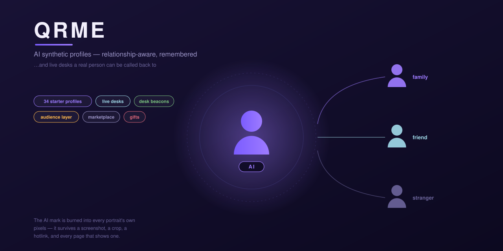
00 · CoverRepo hero / social preview — one profile, many relationships
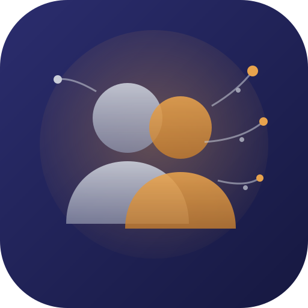
01 · App iconTwo silhouettes dissolving into a neural web
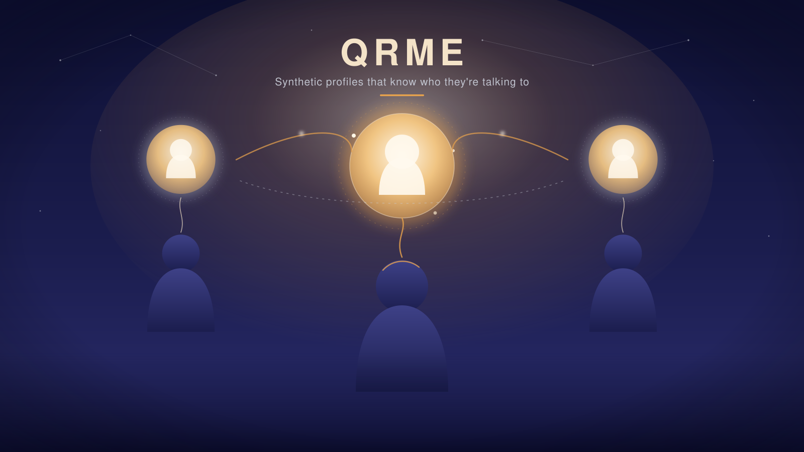
02 · Hero bannerPeople with luminous avatars, linked by relationship threads
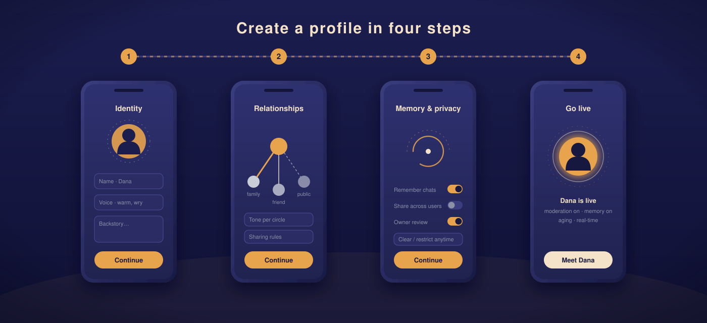
03 · OnboardingIdentity → relationships → memory & privacy → go live
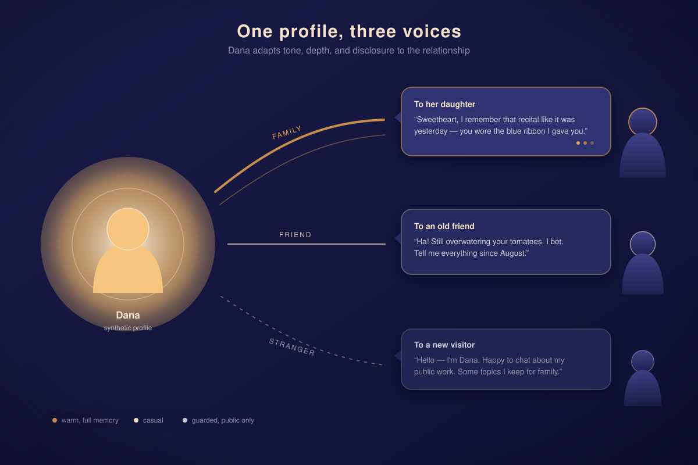
04 · Relationship-awareOne profile, three voices — family, friend, stranger
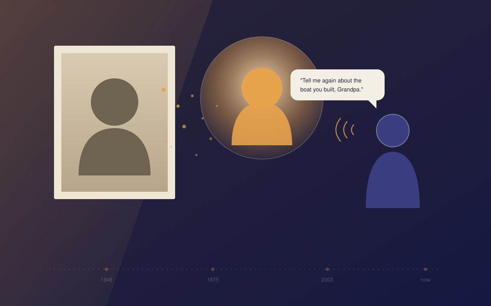
05 · Legacy profileA portrait becomes a living voice for the family
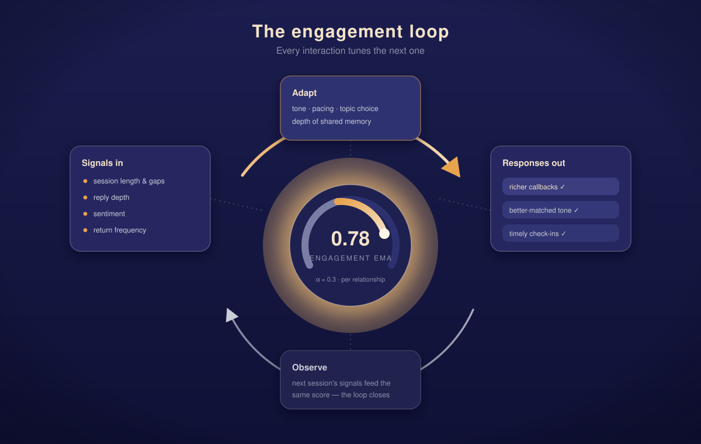
06 · Engagement loopSignals in, adaptation, refined responses out
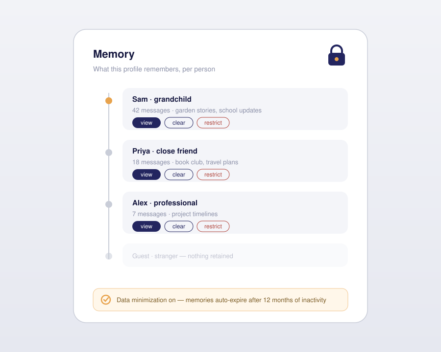
07 · Memory & privacyKept, restricted, cleared — the owner decides
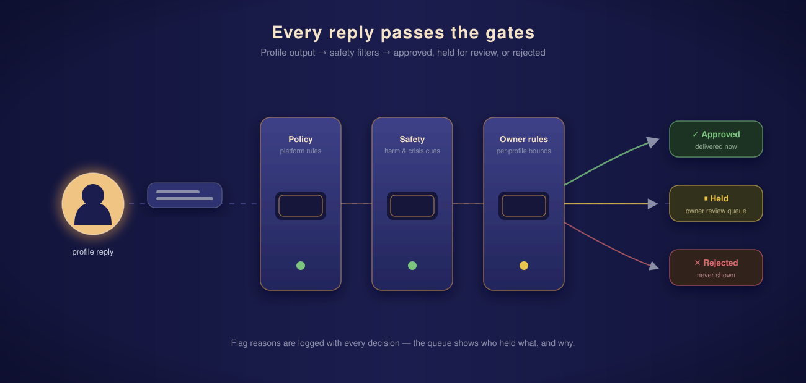
08 · Moderation pipelinePolicy, safety, and owner-rule gates before visibility
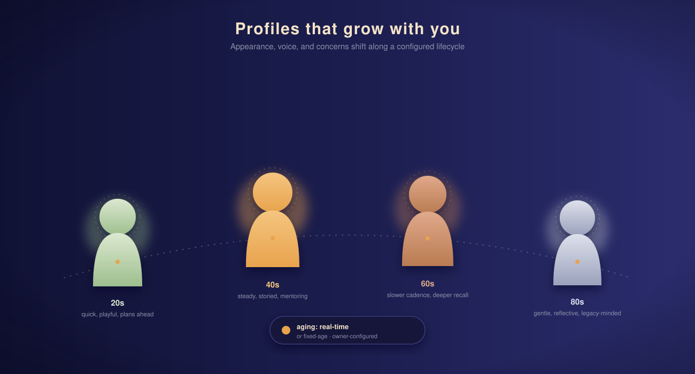
09 · Aging & lifecycleThe profile grows with its people
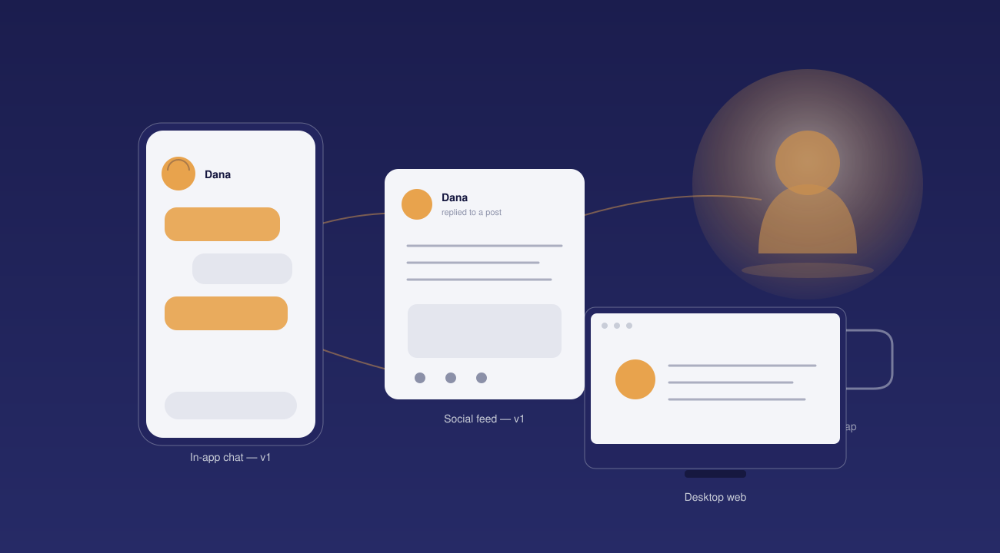
10 · Multi-surfaceChat, feed, web, AR/VR — one identity
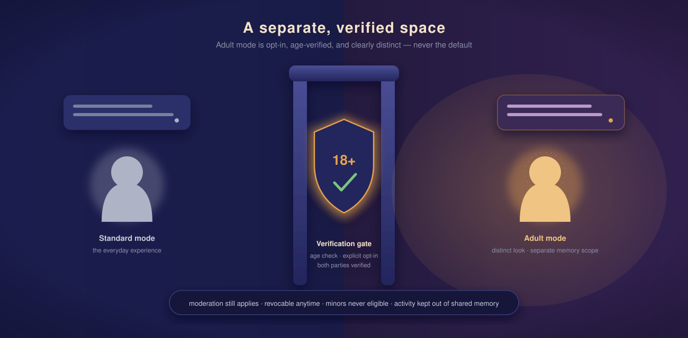
11 · Age-gated modeA verified, opt-in, clearly separate space
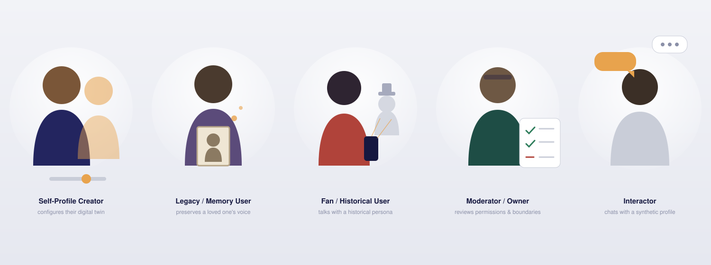
12 · Persona setFive people QRME is built for
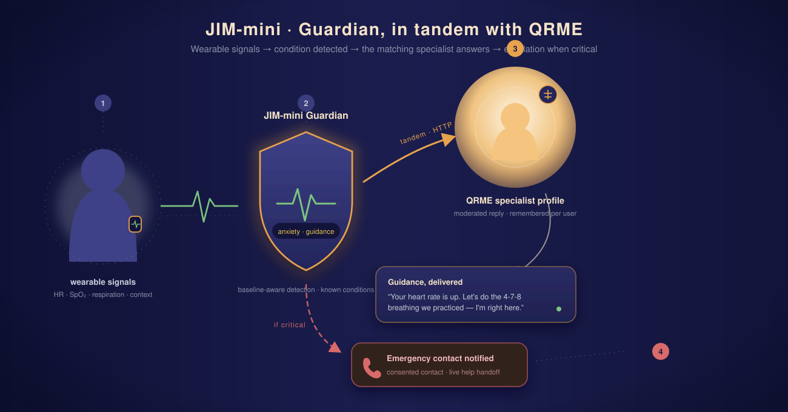
13 · Guardian tandemJIM-mini detection driving a QRME specialist, with escalation